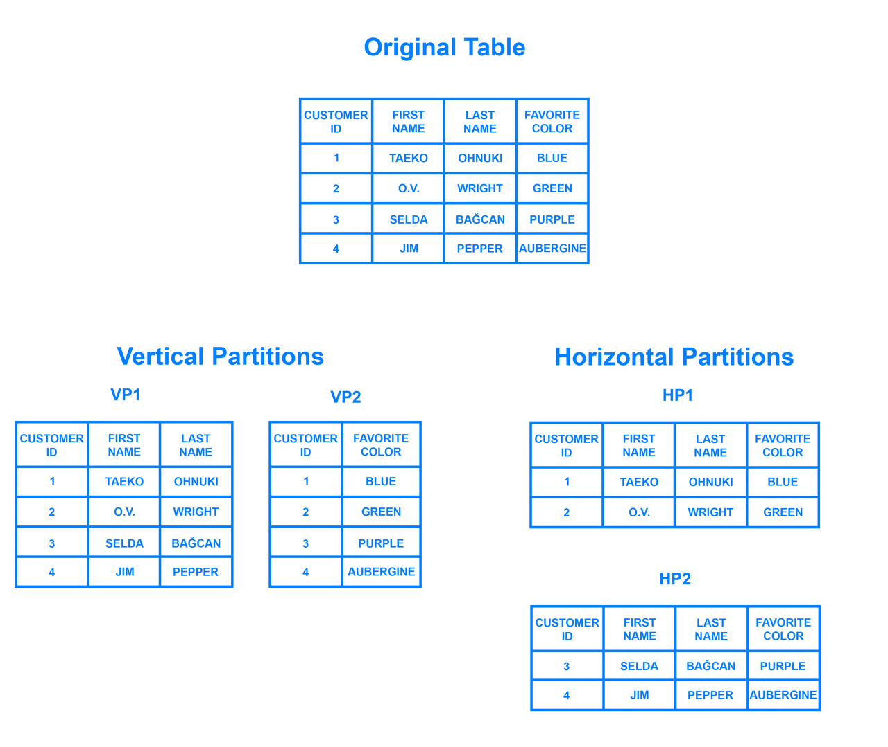
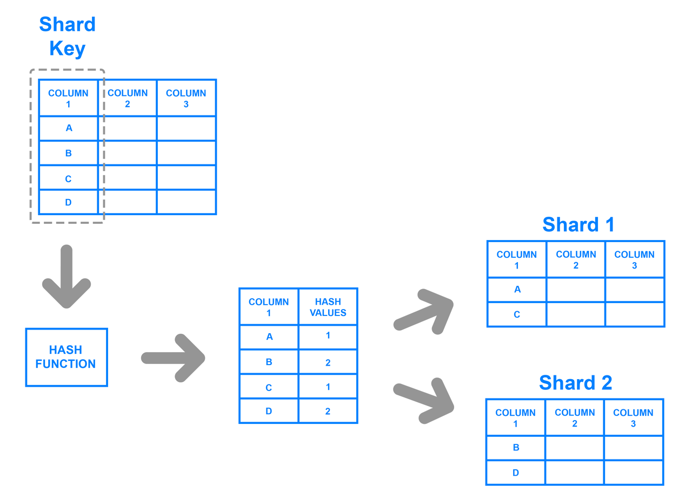
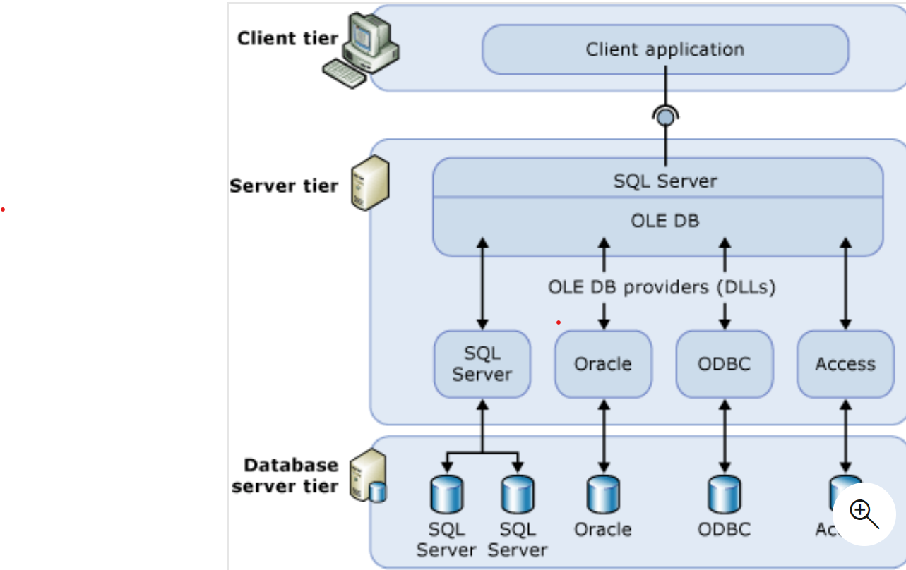

Database Concepts
So in my new job role there is gonna be quite some SQL so here some notes on some important DB concepts.
Time to refresh, since in the last of couple of years your focus was not on pure SQL.
So for that - what could be better than listening to the good old Ghislain?
I guess that with a couple of recordings you should have a new correct mental framework in order to fill up your gaps and that will you put very high to speed on relational part of the things.. This guy works at a high level but he does it in a good way that I always enjoyed.
On the key refresher
Recall the basics of relational databses. Nothing new but alternate keys. Did not recall that definition.
Superkey
A subset of attributes S is a superkey if - there is a functional dependency among all of the other attributes in one table and the subset of attributes: S.
A functional dependency is when the value of an attribute is fully determined by another one.
Formally:

i.e. two values of an attribute which is functionally dependent to another are equal given that the attribute value which they are dependent to are equal.
Candidate Key
A minimum Superkey.
You should reason in terms of candidate keys for your entire universe.
Meaning it should hold for all of the tables in your DB.
Closure
Take a set of attributes T.
Then you can compute the closure of T by listing all of the attributes that are functionally determined by the set T.
Example with notation:

Minimal Basis
Is the minimal set R to get to a given closure U.
Primary Key
The primary key is the one that specifies the columns that make a row entry of the table uniquely identifiable.
Should be a candidate key.
Foreign Key
A foreign key is a column (or combination of columns) in a table whose values must match values of a column in some other table. FOREIGN KEY constraints enforce referential integrity, which essentially says that if column value A refers to column value B, then column value B must exist.
So say that you have a link between table1.column_a and
table2.column_b. Then if table1.column_a is a foreign key to
table2.column_b, you can just insert table1.column_a if an
existing entry to table2.column_b already exists.
In this sense you have this referential integrity and the name foreign key makes sense. It is a key to some foreign value such that you can just have an entry for it if the value that is referenced is existing.
You can then see that you can implement some relational logic with the help of foreign keys. Note that foreign keys can but do not have to match existing primary keys.
Alternate Key / Secondary Keys
In order to understand alternate key, first define what the candidate key is.
candidate key = a set of attributes (columns) that fullfills all of the criteria to be a primary key.
An alternate key, or secondary key is the key that has not been selected to be the primary key, but are candidate keys.
So basically with them you can as well identify unique entries in the table.
Primary Foreign Key
Primary Foreign Key (PFK) - key which acts as primary key in more than one table which occurs in tables with an identifying relationship1.
Database Design Theory
So now that I am starting to design some tables I indeed got back to the good old good old Ghislain.
Here some notes.
Boyce-Codd Normal Form
Work in this way when designing your tables:

Now note the very important bit of it - check at the video and understand what you are loosing when designing your tables in this way and what you are getting. Recall the impossibility triangle:
Impossibility triangle:

So note that with broken dependency we mean that when splitting up a bigger table in order to follow the Boyce-Codd Normal Form we might loose functional dependencies in the smaller projected tables.
Losslessjoin - means that if you join the smaller tables that are in Boyce-Codd normal form, then if a record existed in the bigger table it will also exist after joining the smaller tables.
Parent-Child relations
It’s usually used to specify where one table’s value refers to the value in another table (usually a primary key of another table).
For example, imagine a news article. This could be represented by a table called articles and has fields for id, headline, body, publisheddate and author. But instead of placing a name in the author field, you could instead put the ID value of a user in a separate table—maybe called authors—that has information on authors such as id, name, and email.
Therefore, if you need to update an author’s name, you only need to do so in the authors (parent) table; because the articles (child) table only contains the ID of the corresponding author record.
So basically this is a basics principle.
Best practices of data modeling
Start to work with sqlstyle-guides: see link.
Naming conventions
- IDs should get an
_idsuffix, and primary keys should be called $OBJECTid (e.g., orderid, userid, subscriptionid, orderitemnameid). - Timestamps should get an
_atsuffix and dates should get an_datesuffix (e.g., orderedat or usercreationdate). - Booleans should begin with
is_orhas_(e.g., iscanceled or hasdiscounteditem).
Materialization
By "materialization" I mean (roughly) whether or not a given relation is created as a table or as a view.
If you create the relation as a table, you precompute any required calculations, which means that your users will see faster query response times. If you leave the relation as a view, your users will get more up-to-date data when they query, but response times will be slower.
Grain
The most important data modeling concept is the grain of a relation. (I'm using the abstract term "relation" to refer generically to tables or views.) The grain of the relation defines what a single row represents in the relation.
So basically you are saying what a row is in the DB.
You should then call tables as the pluralized version of the grain.
Toad Data Modeler
So start by checking at this url.
How to read a table in Toad

Note, especially interesting to me is the last column.
See there the references to Alternate Key / Secondary Keys and Indices.
Relations
Understand the following few concepts:
-
Identifying relationsvs.Non-identifying relations:So this is strictly tight to the concept of primary keys and primary foreign key - see On the key refresher.
The basic idea is that for:
-
for
identifying relationsyou have a primary foreign key relation among the tables.
-
for
non-identifying relationsyou have a primary key for each table and the two tables primary keys are non-related.
However when creating the relation, the primary key of one table usually becomes an entry - foreign key - of the other table.
-
This is possibly the most important characteristic.
However, note that the following holds in general terms. Check at it in order to properly define relations.
Reverse Engineer with Toad
Check at this url.
Understand that you might have to do it for some databases where no proper schema was constructed in time.
Then you can start organizing the schema.
You will have to use it probably sooner or later. No doubt, so check at it at some point.
Note that you have multiple options in here.
TODO Completely Reverse Engineer the DB from an existing connection
Reverse Engineer a DDL schema
This is interesting cause you might well start to check in DDL into git.
Then you will solve this coordination issue.
You just have to check in the DDL script every time which is painful.
On the top of it, you might not display the thing as nicely as in
your *.txp file.
In order to insert a DDL schema you work as follows:
- Open a new workspace. Otherwise it would overwrite your exisiting solution.
- Select
Update Model from Databaseoption. See the highlighted option on the top left of the following Screenshot.

-
Select
DDL Script RE(ddl script reverse engineer) as data source.You can then pass the relevant DDL script. It will generate the relevant data model in the workspace.
You can then actually copy and paste such objects into your workpace of choice.
TODO Merge Models
This is potentially the solution if it performs a merge among two different data models in a similar way that git merges conflicts.
You should try this and check how it behaves.
Crashing - so not a useful solution.
-> Understand what is causing troubles here.
Indexes and Constraints
So the part of indexes you can well understand given your recent study of the relevant bit.
Note that the indexes mentioned are similar to the one mentioned on the Microsoft SQL Server.

Note as well the possibility to impose constraints on your DB tables.
That is of first-order importance and in such a way you can set in the DB the relevant constraints instead of pushing them to the application layer.
In order to implement such constraints the syntax is the following:
CREATE TABLE table_name (
...,
CONSTRAINT constraint_name CHECK ( predicate ),
...
)
--------------
ALTER TABLE table_name
ADD CONSTRAINT constraint_name CHECK ( predicate )
As always you can enter such constraints in Toad and you will be able to preview the relevant SQL query out of it.
TODO understand that better. what sql server is the basis for it
cause so far I did not connect it to any databse. so there must be an issue of a different kind.
Working with Relational Systems
Views, stored procedures and indices.
In general it will be a good choice to take some time and read the official documentation of the Microsoft SQL Server. There you will find many interesting bits of information such as the graph capabilities etc.
Especially the internals architecture and design might be an interesting section.
Indices
Idea you can leverage on this for getting to faster query times.
Note that if you want this class goes over two of the most basic indices.
You can then find the time yourself to go over the other indices.
Note that you have the following types of indices in Microsoft SQL Server: indices.
Always recall the following trade-off:
- if you have and index: writing is slower, cause you will have as well to update the index. But reading will be much faster if it can leverage on that index.
- and vice versa without index.
Table Views
This is a powerful concepts.
The wikipedia definition for it is sufficient to get a basic understanding of what views are:
A view is the result set of a stored query on the data, which the database users can query just as they would in a persistent database collection object.
This pre-established query command is kept in the database dictionary.
Unlike ordinary base tables in a relational database, a view does not form part of the physical schema: as a result set, it is a virtual table computed or collated dynamically from data in the database when access to that view is requested. Changes applied to the data in a relevant underlying table are reflected in the data shown in subsequent invocations of the view
Views are helpful in the follwoing cases:
- can represent a subset of data. can be used for access permissions. You expose a view to some user without exposing the entire database.
- views can join and simplify multiple tables into a single virtual table. (note that though the performance will likely still suffer from the burden of computing the joins each time one of the underlying queries changes)
- you can hide some complexity using views such that is useful for some other person of your team to work with.
- views just take very little space to store. the DB just contains the definiton of a view and not a copy of all the data that it presents.
Note that in a similar way to the programming concepts you can nest views such that you can a view aggregating the information from multiple views.
Note a table is a set: A view is a relational table, and the
relational model defines a table as a set of rows. Since sets are
not ordered — by definition — neither are the rows of a
view. Therefore, an ORDER BY clause in the view definition is
meaningless.
On Updating a view
Very Important Note - on updating a view: note that if you update a view you will actually update the underlying persisted table. Such table will be updated such that your view will ultimately match your update condition.
So this is very important. You cannot only work with views for the projection exercises and informatin retrieval you need.
You can as well use the view in a very neat way for writing and updating into your DBs.
Note that in this sense it might make sense to restrict the view to allow just specific insert operations.
Note as well the following:
If your view is a projection of a subset of attributes from the underlying table, you will not be able to update the view if the missing attributes do not accept null values or do not have a default.
This because by product such an update would require the attributes to become nulls and/or fall back to the default values.
Note as well that recursion is not possible in updating a
view. For instance a nested table in the where clause.
Materialize Views
You can materialize a view such that it is stored physically on the disk.
It will be must faster query-time then.
If you decide to materialize do not forget then to referesh the materialized view if you update the underlying table.
The two will not be in sync if you do not refresh.
You should therefore be particularly careful when working with this.
Stored Procedures
So that is probably the big discussion in my larger team.
The question is if to keep the business logic into the application code or into sql-queries.
I always embedded my business logic at the application layer performing the necessary data withdrawl and transformation steps at the application layer.
There is the tendency in my team to use a different approach and to store the business logic into stored procedures. I am too fresh into the entire systems of my team to take an informed about the topic. (Update 11/02 - I see why they do so. Working in languages as Java for data wrangling is just plain horror)
So develop on this and explore the topic further until you can take an informed position about the topic.
Starting with the basic 15 min. research the following picture emerge.
Stored procedures are essentially SQL statements that are saved in the database data dictionary. You can pass parameters to your stored procedures. Such parameters will be passed by the client triggering a stored procedure. It is therefore possible to expose some business logic in a flexible way through them.2
Note that they do not have to return a table (set of rows) or a value as in the case of functions and there is in this sense a difference between the two. You can for instance perform CRUD operations via stored procedures.
Now the arguments that I am reading around in favour of stored procedures are the following:
-
It can be easily modified: We can easily modify the code inside the stored procedure without the need to restart or deploying the application. For example, if the SQL queries are written in the application and if we need to change the logic, we must change the code in the application and re-deploy it.
That is true for compiled languages and not for scripting languages. There there is no big difference as I usually develop keeping a runtime open where I do my on the fly development running the application logic of interest.
Moreover, this sounds like a little benefit to justify the usage of such stored procedures.
—
Even for compiled languages the above is crap. See for instance devtools in Spring.
-
Reduceded Network Traffic: A major advantage of stored procedures is that they can run directly within the database engine. They are in fact stored on the DB and from there the database engine executes them.
In a production system, this typically means that the procedures run entirely on a specialized database server, which has direct access to the data being accessed. You just ship your parameters and that is it. The benefit here is that network communication costs can be avoided completely. This becomes more important for complex series of SQL statements.
As if you have to traffic all of the SQL results back and forth, make transformations and then run other queries based on that you see that you quickly get a huge amount of traffic and everything becomes messy.
My Comment: I do see the argument. I am not sure that it is really the definitive solution. As you are running SQL statements theoretically you can ship the very same SQL statement via the application and you can do that in 1 shot so if you structure things properly you should be able to keep your network bandwidth safe.
-
Centralized business logic: this point follows directly from the above. To see this consider the follwoing wording above:
They are in fact stored on the DB and from there the database engine executes them.
So this means that you have no chance of having a curropted client-program logic that was not properly managed across your software development teams. There is a single source of truth for the business logic and that reside at the database location.
My comment: The strongest argument for me. Probably the one and only that makes really sense and the ultimate reason for stored procedures.
Note: I even read the following as advantage.
The database system can ensure data integrity and consistency with the help of stored procedures.
My comment: I think that is very important. Would need some more detailed explaination of how that would be exactly implemented to make sense of it in a real way.
- Delegating access-rights: In many systems, stored procedures can be granted access rights to the database that users who execute those procedures do not directly have.
- Performance: Because stored procedure statements are stored directly in the database, they may remove all or part of the compiling overhead that is typically needed in situations where software applications send inline (dynamic) SQL queries to a database. (However, most database systems implement statement caches and other methods to avoid repetitively compiling dynamic SQL statements.) Also, while they avoid some pre-compiled SQL, statements add to the complexity of creating an optimal execution plan because not all arguments of the SQL statement are supplied at compile time. Depending on the specific database implementation and configuration, mixed performance results will be seen from stored procedures versus generic queries or user defined functions.
Note that there are important disadvantages as well.
-
Stored procedure languages are often vendor-specific. Changing database vendors usually requires rewriting existing stored procedures.
My comment: interesting that they decided to go so heavily on them. I think that the lock-up must not be extreme otherwise I would not imagine them to rely so much on them.
-
Changes to stored procedures are harder to keep track of within a version control system than other code.
My comment: This is in fact what the team is complaining about. There is a single individual that has a good overview of them and all of the others are masked and if they want to dig into it is annoying to start reading huge SQL statements that can be hardly broken apart in which there are parameters embedded.
Note that it must be a thing in the DB world the one of working with DBs.
I also heard talking about it in databricks sessions about a company working with them before switching to databricks.
Update 02/05
After getting a little bit more on-hands with their system I think that it is indeed suboptimal to work through such methods.
I am quite sure I will put such business logic into the application.
Note that probably they worked as well through them in order to guarantee ACID transactions.
You have as well methods in spring data that can guarantee you this property.
So it really makes little sense to focus so much on this.
Temp Tables
Check at it here.
This is as well an interesting concept that is at times used in the team.
The essential idea is the following:
- You create a table that can perform CRUD operations as other persistent DB tables.
- Temporary tables are dropped when the connection that creates the table has closed. Otherwise they can be explicitly dropped by users.
Note that one temp table will be available throughout the connection.
Note that two different connections will create different temp-tables even if they are called in the same way.
See the following concept with postfix

Global temp tables
Note that you can as well create global temp tables that are accessed by all other connections.
On Database Architecture
Datbase Partitioning
This sections notes are based on: this.
In the vertical partition you split by column. In horizontal you have different tables with the same schema saved over different instances. So your database is in fact distributed.
Database Sharding
Basically as mentioned this is horizontal partitioning.
Database shards exemplify a shared-nothing architecture. This means that the shards are autonomous; they don’t share any of the same data or computing resources.
Oftentimes, sharding is implemented at the application level, meaning that the application includes code that defines which shard to transmit reads and writes to. However, some database management systems have sharding capabilities built in, allowing you to implement sharding directly at the database level.
Note the following reasons for sharding:
First and foremost you scale out with it. This is essentially the idea of the Big Data frameworks that you saw in your multiple classes at University time.
Another reason why some might choose a sharded database architecture is to speed up query response times. When you submit a query on a database that hasn’t been sharded, it may have to search every row in the table you’re querying before it can find the result set you’re looking for. For an application with a large, monolithic database, queries can become prohibitively slow. By sharding one table into multiple, though, queries have to go over fewer rows and their result sets are returned much more quickly.
As a final reason the article mentions this one:
Sharding can also help to make an application more reliable by mitigating the impact of outages. If your application or website relies on an unsharded database, an outage has the potential to make the entire application unavailable. With a sharded database, though, an outage is likely to affect only a single shard. Even though this might make some parts of the application or website unavailable to some users, the overall impact would still be less than if the entire database crashed.
I mean to be honest I think there are more elegant solutions for the above. It is a bit a forced point but I list it nonetheless in here.
Note that there are as well quite some concepts as mentioned on the referred source above that speaks counter the sharding idea.
Then for instance one classical sharding possibility is the following:
Note that the above is just one possibility among the many sharding possibilities.
Linked Servers
These enable you to implement distributed databases that can fetch and update data in other databases.
They are for instance a good solution in the scenarios where you need to implement database sharding without need to create a custom application code or directly load from remote data sources.
So basically with them you can do the following:
- The ability to access data from outside of SQL Server
-
The ability to issue distributed queries, updates, commands, and transactions on heterogeneous data sources across the enterprise.
Think for instance again to the case of sharding.
Note that the reason why we use this solution as a team is different but this is another discussion I will not dig too much into.
Basically the way you implment this architecture is then the following:
So understand now that the set up we have at work is a bit different.
It is not 100% the same. You can basically have server-to-server links and you find these in your data studio under the following path:
- Server Objects -> Linked Servers.
You can then select that object and a databse in it in order to make these cross-server SQL statements.
Some SQL Notes - Language Itself
This is fairly standard material. I just was not a too heavy user of SQL recently, which I have to become again.
Set Identity Key - On/Off
Note that when this is off it basically means that you cannot set the identity key.
Note that with identity key - the primary key is ment.
The idea is essentially the following:
The primary key column is often set to auto-increment when constructing a SQL Server database. The IDENTITY limit is set on for the primary key column to do this. The starting location and step of increment are transferred to the IDENTITY column as parameters. Then whenever a new record is added, and the identity insert is set to OFF, the value of the IDENTITY column is increased by the pre-defined step normally a number.
So set it on or off depending on your needs. And it is obvious that depending on your choice you will get errors or not if trying to insert the primary key in an insert statement.
Insert Syntax
Recall inserting syntax
INSERT INTO table_name (column1, column2, column3, ...)
VALUES (value1, value2, value3, ...);
COALESCE()
COALESCE() function returns the first non-null value in a list.
SELECT COALESCE(NULL, 1, 2, 'W3Schools.com'); -- returns 1
iif
return YES if condition is True and NO otherwise.
On Column notation
I basically had the same question as this guy.
So generally you can always use []. There seems not be
consistency in the team. Both ways are used.
WITH
Syntax
WITH query_name1 AS (
SELECT ...
)
SELECT ...
So the idea is that you create a query and give it a desired name.
You then use the result of such query for running a second query.
In such a way you avoid to perform the nasty nested loops.
Note that a single with clause can introduce multiple query names by separating them with a comma
WITH query_name1 AS (
SELECT ...
)
, query_name2 AS (
SELECT ...
FROM query_name1
...
)
SELECT ...
Merge
The MERGE statement is used to make changes in one table based on values matched from another.
This essentially performs insert, update, delete into a
single statement.
You can work with a merge statement in the following way:
MERGE targetTable
Using sourceTable
ON mergeCondition
WHEN MATCHED
THEN updateStatement
WHEN NOT MATCHED BY TARGET
THEN insertStatement
WHEN NOT MATCHED BY SOURCE
THEN deleteStatement

So you understand that you apply different logic for different matching statements.
Note that when you have a logical wrong condition, for instance
source 1=0 then the condition is always fulfilled. This is
sometimes used in combination with merge in order to leverage the
output property. There are restrinctions for it with the insert
statement in this sense.
Output
The OUTPUT clause returns the values of each row that was affected by an INSERT, UPDATE or DELETE statements. It even supports with a MERGE statement, which was introduced in SQL Server 2008 version.
Update Statement
This is the relevant syntax
UPDATE table_name
SET column1 = value1, column2 = value2, ...
WHERE condition;
Delete Statement
DELETE FROM table_name WHERE condition;
Alter Statement
In such a way it is possible to add, delete or modify columns in an existing table.
ALTER TABLE table_name
ADD column_name datatype;
Create
Here the syntax
CREATE TABLE Mytable.MyName (
columnName varchar(128),
columnName2 varchar(256),
columnName3 float
);
Some lower level stuff - check at what is running in the DB
It will be important at some point to check what is going on with your database and what you are performing in there at a particular moment.
Got this query somewhere…. not working cause I have no permission at the moment. Go back to it at some point.
SELECT des.session_id ,
des.status ,
OBJECT_NAME(dest.objectid, der.database_id) AS OBJECT_NAME ,
SUBSTRING(dest.text, der.statement_start_offset / 2,
( CASE WHEN der.statement_end_offset = -1
THEN DATALENGTH(dest.text)
ELSE der.statement_end_offset
END - der.statement_start_offset ) / 2)
AS [executing statement] ,
des.login_name ,
des.[HOST_NAME] ,
der.blocking_session_id ,
DB_NAME(der.database_id) AS database_name ,
der.command ,
des.cpu_time ,
des.reads ,
des.writes ,
dec.last_write ,
des.[program_name] ,
der.wait_type ,
der.wait_time ,
der.last_wait_type ,
der.wait_resource ,
CASE des.transaction_isolation_level
WHEN 0 THEN 'Unspecified'
WHEN 1 THEN 'ReadUncommitted'
WHEN 2 THEN 'ReadCommitted'
WHEN 3 THEN 'Repeatable'
WHEN 4 THEN 'Serializable'
WHEN 5 THEN 'Snapshot'
END AS transaction_isolation_level ,
deqp.query_plan
FROM sys.dm_exec_sessions des
LEFT JOIN sys.dm_exec_requests der
ON des.session_id = der.session_id
LEFT JOIN sys.dm_exec_connections dec
ON des.session_id = dec.session_id
CROSS APPLY sys.dm_exec_sql_text(der.sql_handle) dest
CROSS APPLY sys.dm_exec_query_plan(der.plan_handle) deqp
where des.session_id <> @@spid
To see key relations for a column/table
SELECT
TABLE_NAME,
COLUMN_NAME,
CONSTRAINT_NAME
FROM
INFORMATION_SCHEMA.KEY_COLUMN_USAGE
WHERE
TABLE_NAME = 'result' AND
COLUMN_NAME = 'extract'
Then you will have a table with all of the relations for that given table/column.
You can then check at all of the tables/columns affected by a given key constraint.
Some useful sql snippets
These will pose some very basic queries and concepts that you will have to use continuously… I do not like to continuously do the double of the effort.
So will store here the basic stuff and just perform a copy and paste exercise when necessary.
Check that two tables are equal
Starting to get back the sql skills.
Check for instance at the following.
You can use the following as a snippet to check that two tables are no different from each other.
select mark.* -- select the different one.
-- the general idea is the following:
-- 1. get all of rows where you have a match for the specified columns (see join)
-- 2. make a full outer join on the results of 1. and check which record are null
-- meaning there was not a match.
from (select *
from B1_M21.mac.barra_factors
where version = 92) as mark
full outer join (
-- here you check that you have a match for the columns of interest
-- in the two tables marco and mark.
select *
from B1_M21.result.Factor_Loading
where as_of_version = 11
) on m.barra_security = a.security
and m.factor = a.credit_factor
and m.value = a.coefficient
where (mark.credit_factor is null
or marco.factor is null) -- note that not even this is perfect.
-- just checking if there was not a match on these.
-- so would have to check also at the other ones..
-- double check next time you will properly use it.
Bit
Note that this is a very particular data type.
The idea is that it can be either 0 or 1.
But note the tricky part of it. If you insert numbers higher than
1, it does not raise an error. It simply enters 1.
In this sense if you would like to have a proper boolean variable with quality control you would have to insert a constraints in your DB to check for it.
Raising Errors
So we have a heavy user of stored procedures in the team.
So he puts a lot of the business logic in SQL.
So there are stored procedures performing the relevant bit of the application logic.
Now note that these stored procedures hold difficult business logic.
Say for instance:
- declaring interim tables
- try catch expressions raising errors
etc.
On the last one you need to understand a bit the logic of the error messages.
This is all the info you have at times. But the developer is giving you some info if you understand that error messages.
Apart from the message itself that is not always 100% exhaustive - you have the severity number.
RAISERROR (N'This is message %s %d.', -- Message text.
10, -- Severity,
1, -- State,
N'number', -- First argument.
5); -- Second argument.
-- The message text returned is: This is message number 5.
That is important as it gives you an idea about who should be informed about what.
All of the different types of joins
Finally, decided to quickly write a note for it. The issue is the following, you have the following visualization. You always forget how to read it.
I periodically learn it and then after a while I do not recall it.
It is quite simple. Making an example here with left join such that you will never waste any time with it anymore.
Basically the idea is the following:

So basically the difference is the following:
left-join: you keep all of the data from the left-side - i.e. the table you are joining. This independently if there is a match or not.
All of the attributes of the table you are joining with are null, just if there is a matching, then you will have an equality relation and you will be able to access the values for the attributes.
If there is no matching the selected fields of the other table are set to null.
And in a similar way you interpret all of the other relations in there.
How to copy a table from one database to another one
This is another very simple schema
Create schema HumanResources
Go
Select * into SQLShackDemo.HumanResources.Department from
AdventureWorks2018.HumanResources.Department
INFORMATIONSCHEMA
This is as well interesting.
Check at the following: here.
Footnotes:
An identifying relationship is a relationship between two entities in which an instance of a child entity is identified through its association with a parent entity, which means the child entity is dependent on the parent entity for its identity and cannot exist without it.
Note as well that here is the big difference with Views. In views you cannot pass any paramters.